6 Dashboard dinámico con Quarto y Shiny
En la clase pasada exploramos Quarto dashboards estáticos, donde aprendimos a estructurar un panel con páginas, barra de navegación, sidebar y cards. Vimos que este tipo de dashboards son muy útiles para presentar reportes reproducibles y bien organizados, pero tienen una limitación importante: la información se muestra tal cual, sin posibilidad de que el usuario interactúe con ella.
Hoy avanzaremos al siguiente nivel: los dashboards dinámicos con Quarto y Shiny.
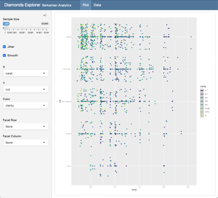
6.1 ¿Por qué Shiny?
Shiny es un paquete desarrollado por RStudio (ahora Posit) que fue lanzado en 2012 con el objetivo de acercar el poder de R a un entorno web. Antes de Shiny, quienes querían compartir resultados interactivos debían exportar los gráficos o programar en otros lenguajes (HTML, JavaScript), lo que hacía el proceso más complejo y menos accesible para usuarios de R.
Con Shiny se introdujo un marco que permite:
Construir aplicaciones web directamente desde R, sin necesidad de aprender lenguajes adicionales.
Crear interfaces interactivas donde el usuario puede manipular inputs (desplegables, sliders, botones).
Conectar esos inputs con outputs reactivos, que actualizan automáticamente gráficos, tablas o modelos estadísticos.
Su popularidad creció rápidamente en la comunidad de ciencia de datos y análisis aplicado, porque abrió la posibilidad de pasar de un análisis reproducible en R a una herramienta interactiva lista para la toma de decisiones o la enseñanza.
Hoy Shiny se integra fácilmente con Quarto, lo que permite combinar la estructura clara de documentos reproducibles con la interactividad de aplicaciones web.
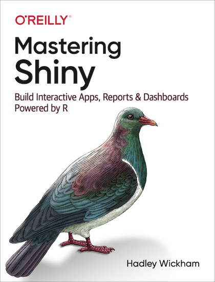
Te recomiendo leer el libro “Mastering Shiny”, sobre todo la parte de fundamentos, la cual también es importante al manipular shiny dashboards con Quarto!
6.2 Estructura
6.2.1 Interfaz de usuario (UI)
La UI define cómo se ve el dashboard y cómo el usuario puede interactuar con él. Aquí decides la estructura visual:
Dónde estarán los menús, sliders, botones o selectores.
Cómo se organizan las páginas, columnas o secciones del panel.
Qué tipo de elementos visuales se van a mostrar: gráficos, tablas, texto, indicadores.
En términos sencillos, la UI es como el tablero de control de un auto: el velocímetro, los botones, las luces y palancas. El usuario no necesita ver cómo funcionan los sensores internos, solo necesita tenerlos a la vista y poder manipularlos.
6.2.2 Server
El server es la parte lógica y funcional del dashboard. Aquí defines qué debe pasar cuando el usuario interactúa con la UI:
Si el usuario mueve un slider, el server actualiza el gráfico en consecuencia.
Si el usuario selecciona un filtro, el server procesa los datos para mostrar solo lo relevante.
Si el usuario presiona un botón, el server ejecuta el cálculo o la acción indicada.
El server es como el motor del auto: recibe las órdenes (pisar el acelerador, girar el volante) y genera la respuesta (acelerar, girar las ruedas). El usuario no ve directamente el motor, pero sin él el tablero no tendría utilidad.
La separación entre UI y Server es fundamental para comprender cómo funciona Shiny. Aunque al inicio puede parecer una división técnica, en realidad refleja una lógica muy clara: lo que el usuario ve e interactúa (UI) está siempre respaldado por un proceso de cálculo y respuesta (Server).
6.2.3 Relación IU - Server
La correspondencia entre la interfaz de usuario (UI) y el servidor (server) es fundamental en un dashboard con Shiny. Cada elemento que se crea en la UI —un gráfico, una tabla o un texto de salida— debe tener un nombre único que coincida con el definido en el server, y viceversa. Si en la UI mostramos un plotOutput(“ventas”), en el server debemos tener un renderPlot({…}) asociado a output$ventas. Esta relación uno a uno garantiza que lo que el usuario ve en pantalla esté conectado con la lógica que procesa los datos en segundo plano. Mantener esta coherencia no solo evita errores, sino que también asegura que la aplicación sea clara, ordenada y fácil de mantener o escalar.
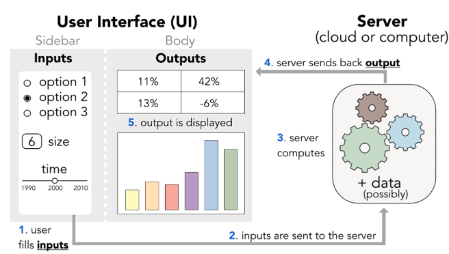
6.3 Pasos para crear un dashboard dinámico
A diferencia de los dashboards estáticos, un dashboard con Quarto + Shiny permite que el usuario interactúe con los datos en tiempo real. Para organizar su construcción de manera ordenada, seguiremos cinco pasos principales:
6.3.1 1. Previsualiza tu dashboard
Antes de escribir código, es importante planificar la estructura del dashboard, al igual que hicimos en la clase pasada:
- Diseñar el layout: definir si nuestro dashboard tendrá una barra lateral (sidebar), cuántas páginas contendrá y cómo se organizarán las secciones (por ejemplo, columnas con gráficos a la izquierda y tablas a la derecha). Pensar en términos de navegación (qué temas tendrá cada página) y de presentación (qué elementos queremos destacar).
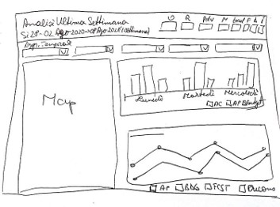
- Crear un proyecto interactivo con Quarto: esto nos asegura que todos los archivos, imágenes y recursos estén centralizados y listos para ser renderizados.
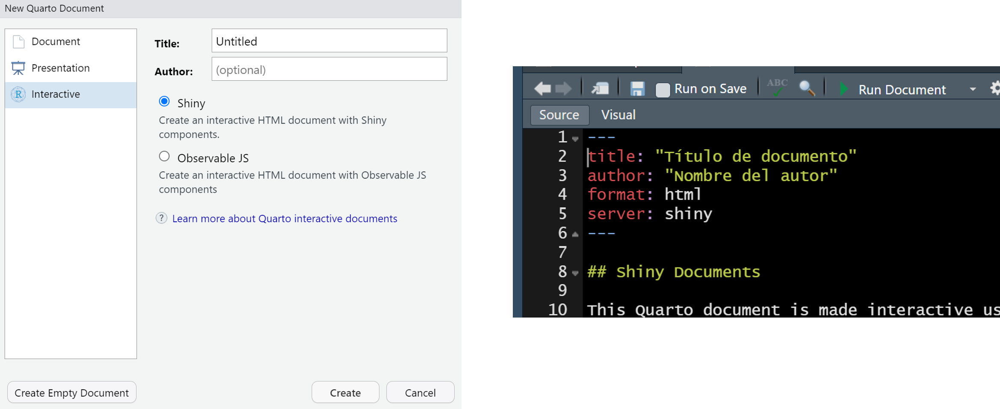
6.3.2 2. Diseña tu dashboard
Para nuestro ejemplo vamos a concebir un dashboard con la siguiente estructura:
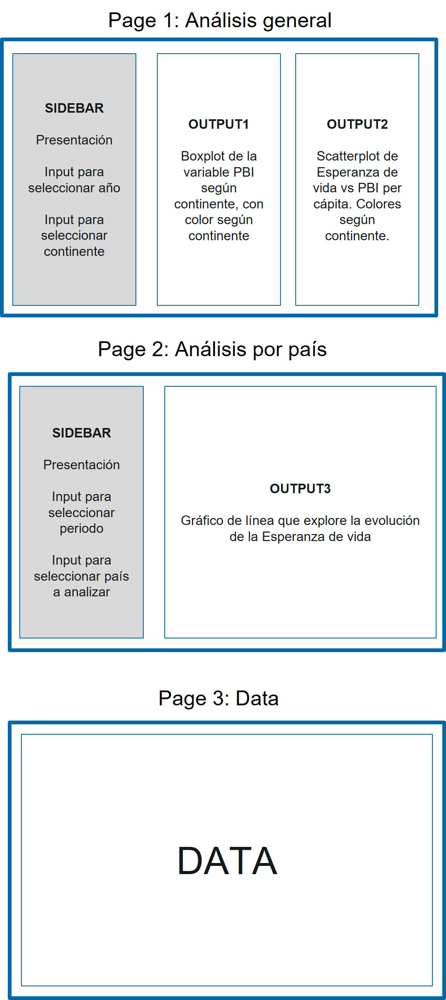
Entonces debemos
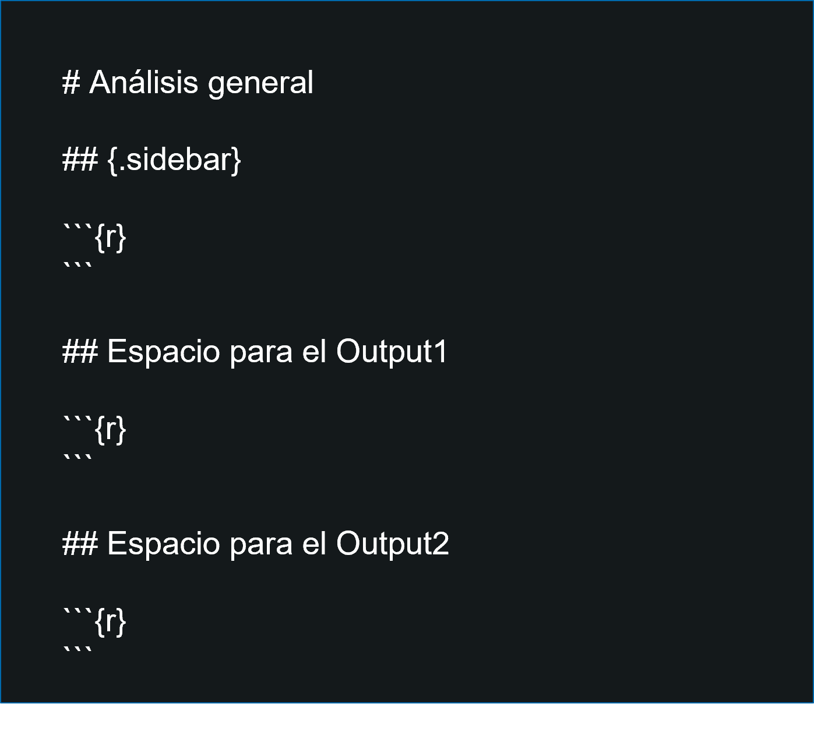
6.3.3 2. Cargar la data
La carga de datos debe hacerse en un bloque especial llamado context: setup, que se ejecuta una sola vez al inicio y queda disponible para toda la aplicación.
Aquí importamos librerías (library(…)), cargamos bases de datos (read.csv(), readRDS(), etc.) y definimos funciones auxiliares.
Separar esta parte es importante porque nos ayuda a distinguir qué es preparación global (datos que no cambian) y qué será interactivo (lo que reacciona a los inputs del usuario).
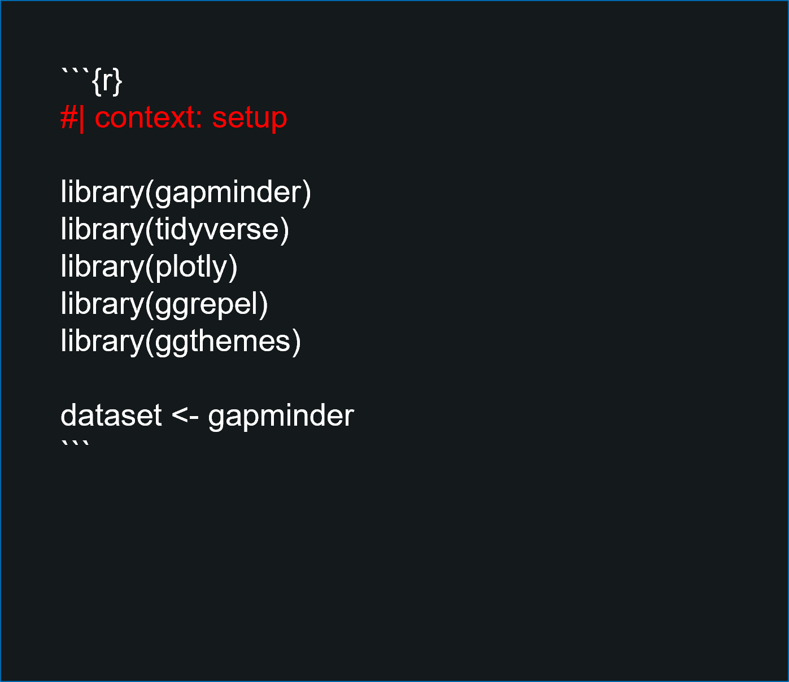
Recuerda colocar #| context:setup al inicio del chunk global
6.3.4 3. Generar los input
Los inputs en un dashboard de Shiny son elementos de la interfaz de usuario que permiten a los usuarios enviar datos o ajustar parámetros para interactuar con la aplicación. Generalmente (no siempre) van en el sidebar, pero pueden ubicarse también dentro de las páginas.
Estos pueden incluir controles como cuadros de texto, deslizadores, botones y menús desplegables.
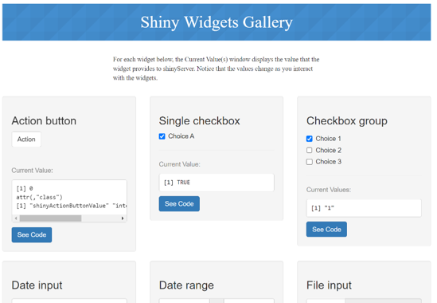 https://gallery.shinyapps.io/081-widgets-gallery/
Los inputs son esenciales para crear dashboards interactivos, ya que permiten a los usuarios personalizar la visualización de los datos y las análisis realizados por el servidor de Shiny en tiempo real.
Tipos comunes de inputs en Shiny:
6.3.4.1 sliderInput():
Crea una barra deslizante para seleccionar un valor numérico o un rango. Para generarlo se sigue la siguiente estructura:
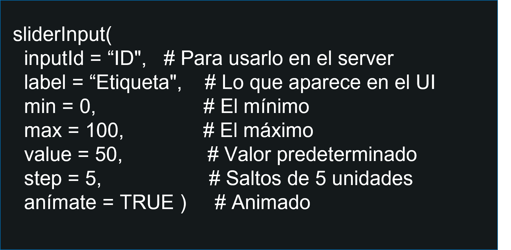
Para nuestro ejemplo vamos a generar:
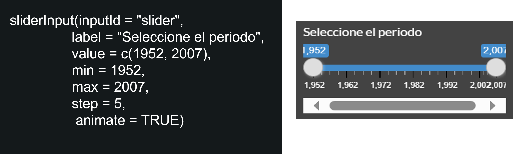
6.3.4.2 selectInput():
Este widget crea un menú desplegable que permite a los usuarios elegir una única opción de una lista predefinida.
Es útil para filtrar datos o configurar parámetros específicos dentro de la aplicación Shiny.
Tener en cuenta que en el argumento choices puedes colocar c(“opcion1”, “opcion2”) o también el nombre de una lista que hayas creado antes.
Para generarlo se sigue la siguiente estructura:
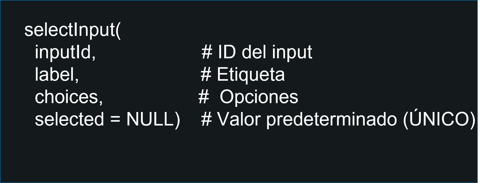
Para nuestro ejemplo vamos a generar:
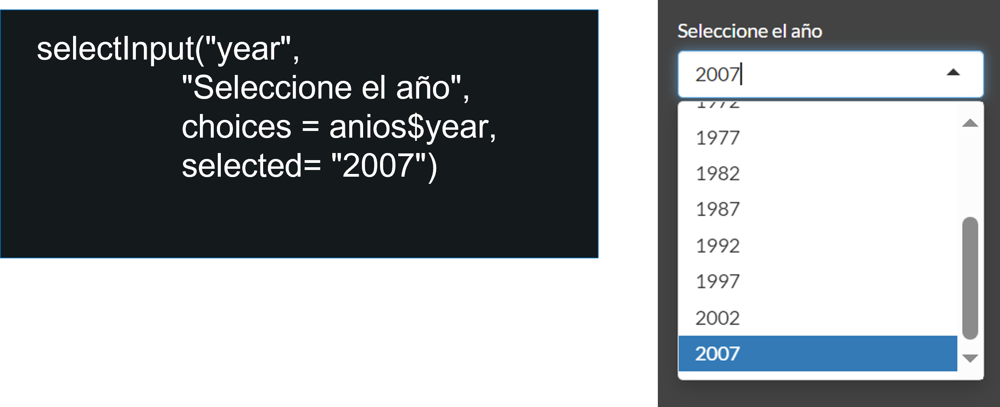
6.3.4.3 checkboxGroupInput():
Genera un grupo de casillas de verificación, permitiendo a los usuarios seleccionar múltiples opciones de un conjunto. Este widget es ideal para aplicaciones que requieren selecciones múltiples y no excluyentes.
Tener en cuenta que en el argumento choices puedes colocar c(“opcion1”, “opcion2”) o también el nombre de una lista que hayas creado antes.
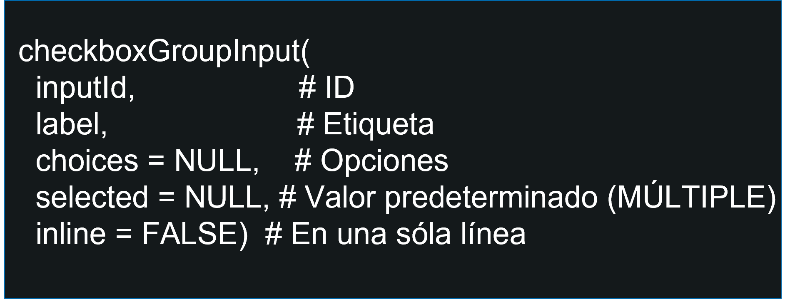
Cada input genera un objeto reactivo que se usará luego en el servidor para filtrar datos o actualizar gráficos.
Para nuestro ejemplo vamos a generar:
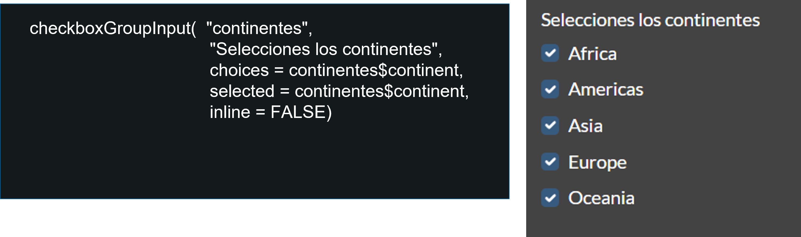
6.3.5 4. Generar el servidor y los outputs
Lo colocamos al final del documento. Tiene un encabezado que dice #| context: server.
Aquí vamos a colocar el código que va a generar de forma interactiva (usando los inputs) los gráficos o tablas que deseemos. Tener en cuenta que hay distintas funciones que van a renderizar outputs dependiendo de su tipo.
En Quarto, esta lógica se coloca en un bloque con context: server, que se ejecuta continuamente en función de los inputs.
El insumo principal del server son los objetos creados por los inputs.
El resultado son los outputs (gráficos, tablas, indicadores).
En nuestro caso usaremos renderPlot() y renderTable(), pero existen otras funciones:
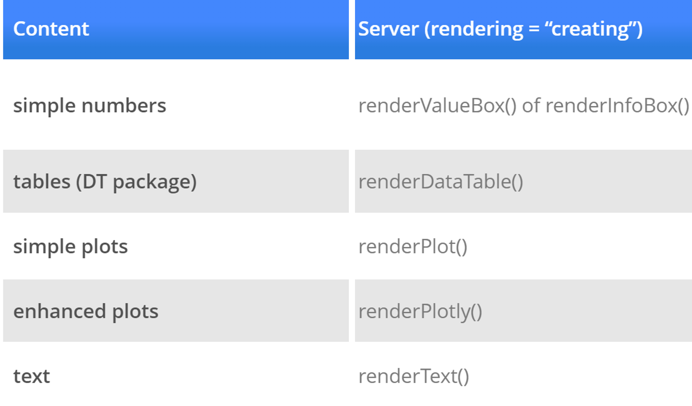
Para nosotros vamos a generar un primer plot en nuestro servidor:
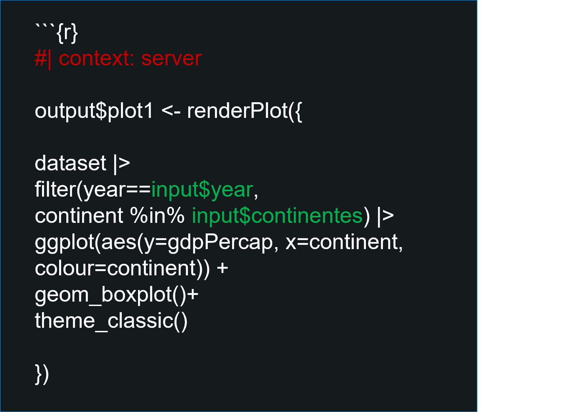
Cada output tiene un nombre (plot1).
Iniciamos la construcción del output con la función pertinente (renderPlot()). En este caso vamos a generar un gráfico.
Para que el gráfico sea interactivo, además de las consideraciones de siempre, debemos colocar los inputs creados anteriormente. Un paso inicial sencillo es configurar que la interacción sea con filter().
Si corremos este código no se va a visibilizar nada, pues sólo se encontrará en el server.
6.3.6 5. Crear la interfaz de usuario
Una vez definidos los inputs (ej. en el sidebar) y generados los outputs en el server, debemos mostrar esos resultados en la interfaz.
La UI se encarga de colocar los gráficos, tablas o indicadores en el lugar correcto.
En Quarto dashboards, esto puede hacerse directamente con encabezados y secciones, donde insertamos los outputs de Shiny con plotOutput(), tableOutput(), etc.
Aquí tienes que tener en cuenta que, como te indiqué en el paso 2, ya tienes que tener tu dashboard diseñado. En otras palabras, debes tener claro dónde va a ir este gráfico al final.
En cada “apartado” del layout (columna o fila, de ser el caso) vamos a “mostrar” el output que ya ha sido creado en el server anteriormente. Ten cuidado con los nombres (mayúsculas, símbolos),ya que debe ser exacto.
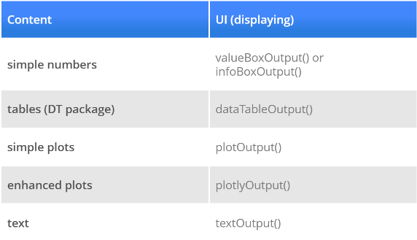
Tener en cuenta que así como tenemos una función para generar outputs en server, también tiene su función correspondiente para presentar el output en el UI.
En nuestro caso podemos generar:
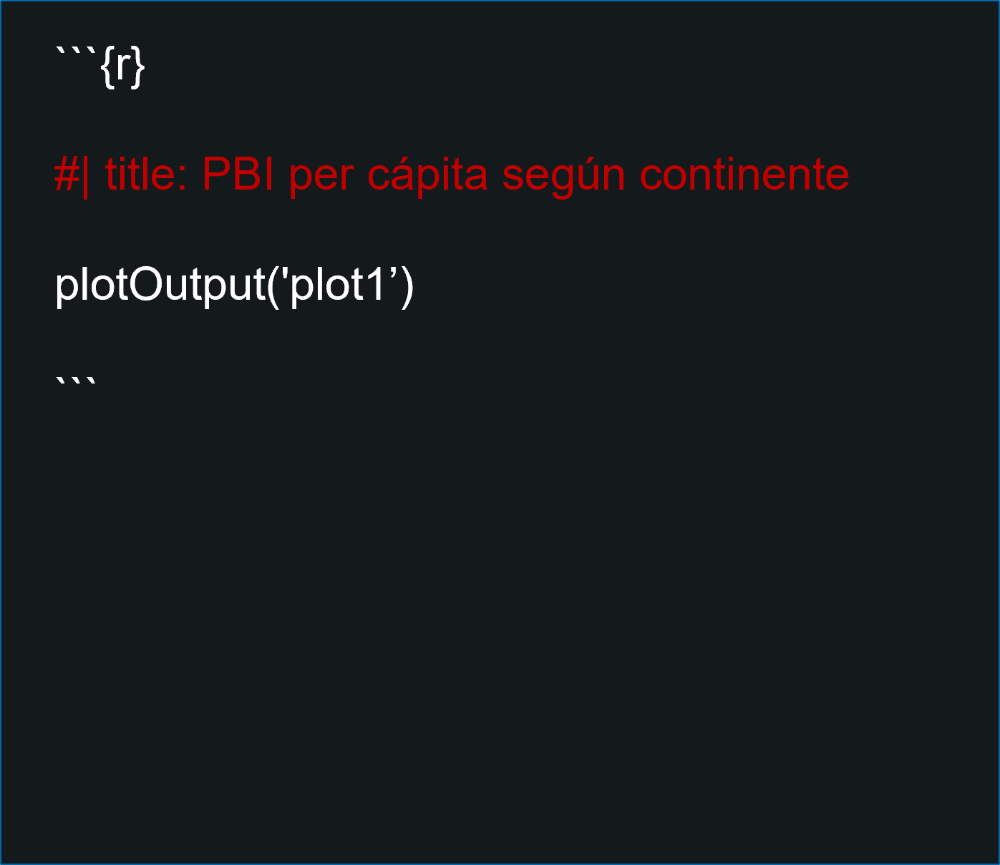
Puedes colocarle un título al gráfico desde la misma tarjeta del Dashboard utilizando #| title:
Descuida: puedes utilizar comillas simples (ALT+39, en Windows) o las comillas normales.
A veces el lugar es muy pequeño para el tamaño del objeto. O viceversa. Si fuese el caso, tendrías que ajustar el tamaño.
6.3.7 6. Despliegue del dashboard
El último paso es hacer que nuestro dashboard esté disponible para los usuarios. Esto se conoce como despliegue.
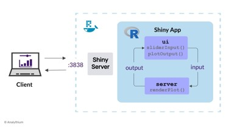
Existen varias formas de hacerlo (servidores locales, RStudio Connect, Docker, etc.), pero en este curso utilizaremos shinyapps.io:
Es un servicio en la nube ofrecido por Posit.
Permite publicar aplicaciones Shiny directamente desde RStudio o Quarto.
Solo necesitas una cuenta gratuita y ejecutar rsconnect::deployApp() para que tu dashboard esté disponible en línea.
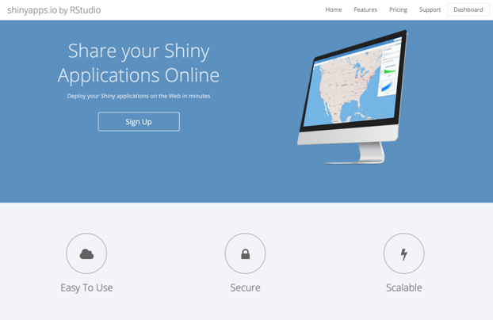
En resumen, el despliegue es el paso que convierte tu proyecto en una aplicación accesible desde cualquier navegador.
Shinyapps.io, al igual que otras aplicaciones, es un servicio de pago.
Sin embargo, tiene una versión libre que te permite:
Cargar tu app a la nube.
Contar con un máximo de 5 aplicaciones.
Te permite un uso máximo de 25 horas por mes.
Tener en cuenta que tienes que instalar el paquete “rsconnect” previamente.